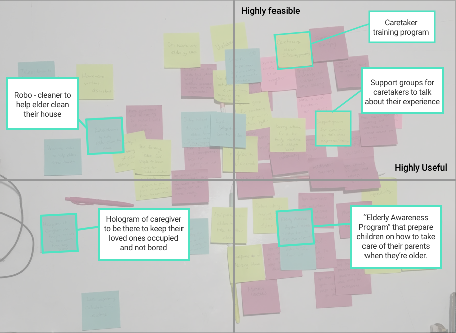

Caregiver Experience


PROJECT BACKGROUND
For this project, we were given a particular target population and we had to identify their problems and needs to create a solution to make their lives easier. Our target population were 60 years old adults caring for their parents or older relative. We started the process by conducting research and interviews to better understand our target audience. We gathered all our insights to identify 50+ problems and brainstorm 50+ solutions. At the end, we presented our findings and ideas to caregivers and their care receiver to get feedback.

RESEARCH METHOD
We started our research online to learn about the problem space and get a sense of the responsibilities of a typical caregiver. We were able to gather some insights about potential problems that might arise. Next, we conducted phone interviews and an in-person interviews to develop empathy for our target audience. Before the interviews, we prepared a set of questions to help start the conversations, but the interviews were semi-structured in nature. The interviews were formed more around listening to the individuals we were interviewing, rather than asking for specific information. We were able to understand caregivers' worries, feelings, and experience while caring for their loved ones.

SYNTHESIZING THE DATA
Using all the research we gathered, we constructed a number of models to better understand and visualize our data.
Stakeholder map
AAfter doing preliminary research, we started to brainstorm the different stakeholders involved in this experience to see where we will be able to gather insights from and what are the gaps in our knowledge.

Personas
After we finished conducting our research, we started creating personas to get a better understanding of the needs and painpoints of caregivers.
One of our personas is Sarah, a 64 year old single woman who is taking care of her 88 year old father, who lost his wife a year ago. Due to her father’s situation, Sarah recently quit her old job and is now working in an environment that is much more understanding about her current situation. Her father lives an hour away from Sarah and he refuses to move closer to Sarah because he desires to be independent. Due to all these circumstances, Sarah visits and stays over at her father’s every weekend to clean up, pay his bills, do other chores, and keep her father company.

Our second persona is Jen, a 60 year old woman who is currently working as a freelance producer. She takes care of her elderly, but still healthy, mother. Jen lives just next door to her mother. She has 5 other siblings who help her care for their mother on a weekly basis. She visits her mother every morning to check up on her, then for lunch, and sometimes for dinner, depending on the day of the week. On the nights she does not visit, one of her sibling takes her place.
Empathy Map
We used the journey maps to help create an empathy map and brainstorm what our typical persona might think, feel, see, say and do. There was also a section in the empathy map to brainstorm the different pains and gains our persona may experience. Our focus was to generalize the data gathered from interviews so that it could apply to a wider range of possible users.

Affinity Diagram
We then started identifying the different problems our persona may experience in an affinity diagram. Each of wrote down commmon problems and painpoint we observed from our research. From there, we grouped similar problems together and added labels using “I” statements to better represent the caregiver’s concerns.
"I" Statement Groups- I am worried about my relationship with the elderly
- I am worried about the elderly’s future
- I have to take care of myself
- I am worried about my emotional/social stuff
- I am worried about my physical state
- I have a lot to take care of (the elderly)...
- Am I good enough?
- I am worried about the elderly’s current health
- I have to pay for…
- I have my own family to take care of


VISIONING PROCESS
After understanding the problems, we brainstormed potential ideas individually to answer any one of the problems we grouped. Afterwards, we shared our ideas and mapped them on a feasibility and usefulness graph. It was difficult gauging where to place the ideas on the graph since the ideas were all relative to each other. Therefore, it led to multiple rounds of revisions.
For our final presentation, we presented our research findings and potential solution to an audience of caregivers to gauge their feedback.